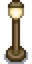
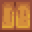

Schreinerladen
| Schreinerladen | |
 | |
 | |
| Öffnungszeiten: | 9:00 bis 17:00 Uhr |
| Ruhetage: | Dienstag, und um 16:00 Uhr Freitag |
| Adresse: | Bergstraße 24 |
| Bewohner: | |
Der Schreinerladen befindet sich im Gebiet Die Berge, nördlich von Pelikan Stadt. Robin ist die Dorfschreinerin und leitet die Schreinerei, welche in ihrem Haus integriert ist, in welchem sie mit Demetrius, Maru und Sebastian wohnt. Der Shop ist jeden Tag (außer Dienstag) von 9:00 bis 17:00 Uhr geöffnet.
Robin verkauft Holz, Stein und Möbel. Sie kann auch das Bauernhaus verbessern und kann neue Hofgebäude errichten. Sie kauft Bauressourcen wie Lehm, Fasern, Hartholz, Stein und Holz (alle anderen Ressourcen werden stattdessen vom Schmied gekauft).
Nachdem sie mit dem Bau beauftragt wurde, fängt sie einen Tag nach Bezahlung an. An einem Festival-Tag arbeitet sie nicht. Die meisten Bauprojekte dauern 2 Tage bis zur Fertigstellung.
Ladenschluss
Das Haus ist jeden Tag zwischen 9:00 bis 20:00 Uhr zugänglich, auch wenn der Schreinerladen geschlossen hat.
Dienstags geht Robin zu Pierres Gemischtwarenladen zu ihrer Yoga-Gruppe mit Caroline, Jodi, Emily und Marnie. Sie geht jedoch um 9:40 Uhr am Tresen vorbei. Wenn man davor eintrifft, kann man mit dem Verkaufstresen interagieren, während sie vorbeiläuft und dann einkaufen. Diese Interaktion funktioniert auch dann, wenn Robin um 19:50 Uhr wieder nach Hause und am Verkaufstresen vorbei geht.
Freitags, wenn der Schreinerladen um 16:00 geschlossen wird, geht sie mit Demetrius zur Kneipe zum Sternenfall. Auch hier kann mit dem Tresen interagiert werden, wenn Robin vorbeiläuft.
Am 18 Sommer ist der Laden geschlossen, weil Robin zu ihrer jährlichen Untersuchung in die Klinik geht.
Der Laden ist auch an allen Festivaltagen geschlossen. Wenn Robin noch an einem Job des Spielers arbeitet, verschiebt sich die Fertigstellung um einen Tag. Sie arbeitet bei Projekten auch Dienstags.
Der Schreinerladen ist an jedem Tag geschlossen, an dem sie für den Spieler ein Projekt ausführt.
Laden Einrichtung
Zusätzlich zum permanenten Angebot, die immer zum Verkauf stehen, bietet Robin täglich verschiedene Einrichtungsgegenstände an.
Permanent im Angebot
Es ist zu beachten, dass die Preise für Holz und Stein ab dem zweiten Jahr steigen. Der Spieler wird am 1. Frühling des 2. Jahres einen Brief erhalten, in welchem steht: "Hinweis: Der Preis für Rohmaterialien in Robins und Clints Läden ist gestiegen." Der Verkaufspreis der Materialien bleibt jedoch nach Jahr 2+ unverändert.
| Bild | Name | Beschreibung | Preis |
|---|---|---|---|
| Holz | Ein stabiles, pflanzliches Material mit vielseitigen Anwendungsmöglichkeiten. | Jahr 1: Jahr 2+: | |
| Stein | Ein gewöhnliches Material mit vielen Anwendungsmöglichkeiten beim Bauen und Herstellen. | Jahr 1: Jahr 2+: | |
| Einfaches Fenster | Kann in deinem Haus platziert werden. | ||
| Kleines Fenster | Kann in deinem Haus platziert werden. | ||
| Kalender | Kann in deinem Haus platziert werden. | ||
| Werkbank | Wenn du hier handarbeitest, hast du Zugang zu Materialien in allen angrenzenden Truhen. | ||
| Holzhackmaschine | Setze ein Stück Hartholz ein, um es in normales Holz zu zerlegen. (Verfügbar nach Erhalt eines Briefes im Winter) |
||
| Mini-Kühlschrank | Ermöglicht, zusätzliche Zutaten zum Kochen aufzubewahren. (Verfügbar nach dem ersten Haus-Upgrade) |
||
| Telefon | Kann zur Überprüfung der Ladenöffnungszeiten und des Inventars verwendet werden. | ||
| Fernseher | Kann in deinem Haus platziert werden. | ||
| Billig-Fernseher | Kann in deinem Haus platziert werden. | ||
| Plasma-TV | Kann in deinem Haus platziert werden. (Verfügbar nach dem ersten Haus-Upgrade) |
||
| Möbelkatalog | Bringt dir unlimitierten Zugriff auf fast alle Möbel... bequem von deinem Haus aus! (Verfügbar nach dem ersten Haus-Upgrade) |
||
| Saisonspflanze | Eine Zierpflanze, die sich jede Saison ändert. Sie benötigt kein Wasser. | ||
| Einfacher Baumstamm | Eine Dekoration für deinen Hof. | ||
| Baumstammstück | Eine Dekoration für deinen Hof. | ||
| Ziegelkamin | Kann in deinem Haus platziert werden. | ||
| Steinkamin | Kann in deinem Haus platziert werden. | ||
| Ofenkamin | Kann in deinem Haus platziert werden. | ||
| Rotes Deluxe-Doppelbett | Kann in deinem Haus platziert werden. (Verfügbar nach "Robins Projekt" Spezialauftrag) |
||
| Bett | Kann in deinem Haus platziert werden. | ||
| Doppelbett | Kann in deinem Haus platziert werden. (Verfügbar nach dem ersten Haus-Upgrade) |
||
| Kinderbett | Kann in deinem Haus platziert werden. (Verfügbar nach dem zweiten Haus-Upgrade) |
||
| Holzfeuerschale Rezept | Blaupause für: Holzfeuerschale | ||
| Steinfeuerschale Rezept | Blaupause für: Steinfeuerschale (Verfügbar nach dem Lernen von Holzfeuerschale Rezept) |
||
| Fassfeuerschale Rezept | Blaupause für: Fassfeuerschale (Verfügbar nach dem Lernen von Steinfeuerschale Rezept) |
||
| Stammfeuerschale Rezept | Blaupause für: Stammfeuerschale (Verfügbar nach dem Lernen von Fassfeuerschale Rezept) |
||
| Goldfeuerschale Rezept | Blaupause für: Goldfeuerschale (Verfügbar nach dem Lernen von Stammfeuerschale Rezept) |
||
| Geschnitzte Feuerschale Rezept | Blaupause für: Geschnitzte Feuerschale (Verfügbar nach dem Lernen von Goldfeuerschale Rezept) |
||
| Skelettfeuerschale Rezept | Blaupause für: Skelettfeuerschale (Verfügbar nach dem Lernen von Geschnitzte Feuerschale Rezept) |
||
| Marmorfeuerschale Rezept | Blaupause für: Marmorfeuerschale (Verfügbar nach dem Lernen von Skelettfeuerschale Rezept) |
||
| Laternenpfahl, Holz Rezept | Blaupause für: Laternenpfahl, Holz | ||
 |
Laternenpfahl, Eisen Rezept | Blaupause für: Laternenpfahl, Eisen | |
 |
Holzboden Rezept | Blaupause für: Holzboden | |
| Steinboden Rezept | Blaupause für: Steinboden | ||
| Ziegelboden Rezept | Blaupause für: Ziegelboden | ||
| Trittsteinpfad Rezept | Blaupause für: Trittsteinpfad | ||
| Strohboden Rezept | Blaupause für: Strohboden | ||
| Kristallpfad Rezept | Blaupause für: Kristallpfad | ||
| Große Truhe Rezept | Blaupause für: Große Truhe |
Wechselndes Angebot
- Siehe auch: Möbel
Im Folgenden ist eine ausklappbare Liste aller Gegenstände, die zufällig in Robins täglichem Angebot erscheinen können.
Hofgebäude
Für die magischen Gebäude siehe Turm des Zauberers
Hofgebäude werden benötigt, um Tiere zu halten. Sowohl Hühnerställe als auch Ställe haben Verbesserungen, doch vor dem Verbessern muss das ursprüngliche Gebäude erworben werden. Jedes Gebäude kann mehrmals gebaut werden, um mehr Tiere zu halten.
Es wird empfohlen, zunächst ein Silo zu bauen, um genügend Heu zu sammeln und aufzubewahren, um täglich Tiere füttern zu können.
Bereits existierende Hofgebäude können auch im Schreinerladen umbewegt werden. Dies geschieht sofort und ist kostenlos, weshalb keine Bauzeit, Gold oder Ressourcen nötig sind außer der Zeit für den Gang zum Schreinerladen. Der gesamte Inhalt des Gebäudes wird mit dem Gebäude in Einem umbewegt. Im Gegensatz zu Kisten muss ein Gebäude nicht entleert werden, um es umzubewegen.
| Image | Name | Beschreibung | Tiere | Kosten | Größe |
|---|---|---|---|---|---|
 |
Stall | Unterkunft für 4 Stalltiere. | Kuh | 4x7 | |
 |
Großer Stall | Stall Upgrade
Unterkunft für bis zu 8 Stalltiere. Ermöglicht Tieren Junge zu bekommen. Schaltet Ziegen frei. |
Ziege | 4x7 | |
 |
Luxus Stall | Großer Stall Upgrade
Unterkunft für bis zu 12 Stalltiere. Beinhaltet eine automatische Fütterungsstation. Schaltet Schafe und Schweine frei. |
Schaf | 4x7 | |
 |
Hühnerstall | Unterkunft für 4 Tiere. | Huhn | 3x6 | |
 |
Großer Hühnerstall | Hühnerstall Upgrade
Unterkunft für bis zu 8 Tiere. Brutkasten wird links neben der Futterentnahme installiert. Schaltet Enten frei. |
Ente | 3x6 | |
 |
Luxus Hühnerstall | Großer Hühnerstall Upgrade
Unterkunft für bis zu 12 Tiere. Beinhaltet eine automatische Fütterungsstation. Schaltet Hasen frei. |
Hase | 3x6 | |
 |
Fischteich | Züchte Fisch und ernte ihre Produkte. Fische vermehren sich mit der Zeit. | Fische | 5x5 | |
 |
Mühle | Ermöglicht es Weizenmehl aus Weizen und Zucker aus Rüben herzustellen. | 4x2 | ||
 |
Schuppen | Ein leeres Gebäude. Füll es mit was auch immer du willst! Das Innere kann dekoriert werden. | 7x3 | ||
| großer Schuppen | Verdoppelt die Größe des Schuppens. Der Innenraum kann dekoriert werden. | 7x3 | |||
 |
Silo | Ermöglicht es, Gras zu schneiden und als Futter aufzubewahren. | 3x3 | ||
 |
Schleim-Stall | Halte bis zu 20 Schleime. Fülle die Wassertröge und die Schleime werden Schleim-Eier produzieren. | Schleime | 6x11 | |
 |
Pferdestall | Ermöglicht das Halten und Reiten eines Pferdes. Das Pferd ist inklusive. | Pferd | 4x2 | |
 |
Brunnen | Stellt eine Wasserstelle bereit, um die Gießkanne aufzufüllen. | 3x3 | ||
| Steinhütte | Ein Heim für einen Freund! Wird aus landwirtschaftlichen Geldmitteln subventioniert. | 1 Landarbeiter in einem mehrspieler Spiel | 5x3 | ||
 |
Holzplanken-Hütte | Ein Heim für einen Freund! Wird aus landwirtschaftlichen Geldmitteln subventioniert. | 1 Landarbeiter in einem mehrspieler Spiel | 5x3 | |
 |
Blockhütte | Ein Heim für einen Freund! Wird aus landwirtschaftlichen Geldmitteln subventioniert. | 1 Landarbeiter in einem mehrspieler Spiel | 5x3 | |
 |
Versandbehälter | Wirf Gegenstände hinein, um sie über Nacht zu verkaufen. | 2x1 |
Hausverbesserungen
Wenn das Bauernhaus vergrößert wird, bleibt die Grundfläche auf der Farmkarte gleich. Es ändert sich nur die äußere Erscheinung.
Hausverbesserungen vergrößern die bestehenden Räume und fügen neue hinzu. Eine Küche ermöglicht das Kochen und ein Kinderzimmer bietet Platz für Nachwuchs.
| Bild | Name | Beschreibung | Kosten |
|---|---|---|---|
.png/72px-House_(tier_2).png) |
Haus Upgrade 1 | Vergrößert das Haus und fügt eine Küche hinzu. | |
.png/72px-House_(tier_3).png) |
Haus Upgrade 2 | Fügt zwei neue Räume hinzu, einen leeren und ein ausgestattetes Kinderzimmer. Die Küche und das Schlafzimmer werden vergrößert. | |
|
Haus Upgrade 3 | Ein Keller ist nun über die Küche erreichbar. Der Keller ermöglicht es ein Reifefass herzustellen, in dem verschiedene Produkte (i.e., Käse, Ziegenkäse, Bier, Met, Helles Bier, und Wein) reifen können und so an Wert und Qualität gewinnen. |
Hausrenovierungen
Hausrenovierungen sind eine in Version 1.5 hinzugefügte Funktion, die es dem Spieler ermöglicht, bestimmte Bereiche seines Hauses hinzuzufügen oder zu entfernen. Hausrenovierungen werden nach dem zweiten Bauernhaus-Upgrade freigeschaltet. Die Renovierungen sind kostenlos, benötigen keine Bauzeit und können rückgängig gemacht werden.
| Name | Bild | Spielbeschreibung | Details |
|---|---|---|---|
| Krippe entfernen | 
|
Krippe aus dem Zuhause entfernen. | Die Krippe wird benötigt, um Kinder zu bekommen.
Kann nicht entfernt werden, wenn die Krippe durch ein Kind belegt ist. |
| Schlafzimmer öffnen | 
|
Entfernt die Wand, die dein Schlafzimmer und den Eingangsraum trennt. | Die Renovierung erweitert das Haus um insgesamt 12 freie Felder. |
| Südliches Zimmer hinzufügen | 
|
Fügt ein Zimmer südlich deines Schlafzimmers hinzu. | Der Raum hat eine Grundfläche von 11×7 Feldern. |
| Eckraum hinzufügen | 
|
Fügt einen Raum in der nordöstlichen Ecke des Hauses hinzu. | Der Raum hat eine Grundfläche von 9×5 Feldern. |
Gebäude Streichen
Das Bauernhaus, der Stall und einige andere Farmgebäude können im Schreinerladen oder im Turm des Zauberers gestrichen werden, wenn im Baumenü "Gebäude streichen" ausgewählt wird. Diese Aktion ist kostenlos und benötigt keine Zeit.
- Schuppen, Ställe, Hühnerställe, und Hütten müssen vollständig ausgebaut sein, um gestrichen zu werden.
- Vom Bauernhaus kann nur das Dach gestrichen werden bis es vollständig ausgebaut ist.
Hier sind die Bereiche abgebildet, in denen Gebäude gestrichen werden können. Die Spieler können eine beliebige Kombination aus "Gebäude" (roter Bereich), "Verkleidung" (königsblauer Bereich) und/oder "Dach" (grüner Bereich) streichen.

Normales Bauernhaus

Bauernhaus - erste Verbesserung

Bauernhaus - zweite Verbesserung

Großer Schuppen

Deluxe Hühnerstall

Deluxe Stall

Pferdestall

Blockhütte

Steinhütte

Holzplanken-Hütte
Gemeinschaftsverbesserung
Wohnwagen
- Siehe auch: Wohnwagen
Nachdem das Bauernhaus vollständig ausgebaut und sämtliche Bündel im Gemeinschaftszentrum
abgeschlossen wurden (oder alternativ nach dem Erwerb der Joja-Markt Mitgliedschaft),
bietet Robin im Schreinerladen eine "Gemeinschaftsverbesserung" für  500.000 G und 950 Holz an.
Erwirbt der Spieler die Verbesserung, so baut Robin innerhalb von 3 Tagen ein neues Haus für Pam (und auch für Penny, falls der Spieler nicht mit ihr verheiratet ist).
Im Mehrspieler-Modus kann nur der Spielersteller die Hausverbesserung kaufen.
500.000 G und 950 Holz an.
Erwirbt der Spieler die Verbesserung, so baut Robin innerhalb von 3 Tagen ein neues Haus für Pam (und auch für Penny, falls der Spieler nicht mit ihr verheiratet ist).
Im Mehrspieler-Modus kann nur der Spielersteller die Hausverbesserung kaufen.
Abkürzungen
Nach dem Kauf der ersten Gemeinschaftsverbesserung, kann die zweite Verbesserung für  300.000 G Gekauft werden. Dadurch werden Abkürzungen freigeschaltet, welche das Reisen vereinfachen.
300.000 G Gekauft werden. Dadurch werden Abkürzungen freigeschaltet, welche das Reisen vereinfachen.
Folgende Abkürzungen werden hinzugefügt:
- Vom Zundersaftwald (Neben Leahs Hütte) zum Strand.
- Aus den Bergen (Links neben der Brücke zum Steinbruch) nach Pelikan Stadt (Nördlich des Joja Marktes).
- Von Pelikan Stadt (südlich des Museums) zum Strand (Zwischen den Gezeitenbäumen)
- Von der Bushaltestelle (durch den Tunnel) in das Wäldchen.
- Von der Insel in den Bergen bis unterhalb der Abenteuergilde (Ein neues Brett wird platziert, zu schmal zum Reiten).
(Es ist möglich, die Abkürzung von der Stadt zum Gezeitenbecken am Strand zu benutzen, ohne die Brücke am Strand zu reparieren)
Hier finden ihr eine Liste mit Vorher- und Nachher-Bildern der Abkürzungen.
| Gebiet | Davor | Danach |
|---|---|---|
| Von Leahs Hütte zum Strand | 
|

|
| Nordosten von Pelikan Stadt zu den Bergen | 
|

|
| Südlich des Museums zu dem Strand | 
|

|
| Treppen im Wäldchen | 
|

|
| Planke zur Insel in den Bergen | 
|

|
Trivia
Der Schreinereiladen ist das einzige Haus, welches zwei Eingänge hat. (Den Haupteingang und wenn mindestens eine zwei Herz-Freundschaft mit Maru besteht einen links neben dem Haupteingang der direkt in Marus Zimmer führt.)
Galerie

Einrichtung

Sebastian's Zimmer
Geschichte
- 1.0: Eingeführt.
- 1.1: Mühle, Schuppen und das 3. Bauernhaus Verbesserung hinzugefügt. Robin kann im Konstruktionsmenü jetzt Gebäude verschieben. Neue Möbel wurden ihrem Verkaufslager hinzugefügt.
- 1.3: Versandbehälter, Hütten, und Gemeinschaftsverbesserung zum Konstruktionsmenü hinzugefügt. Preiserhöhung für Stein und Holz ab dem zweiten Jahr hinzugefügt. Einfacher Baumstamm, Baumstammstück, Ziegelkamin, Steinkamin und Ofenkamin zum permanenten Angebot hinzugefügt.
- 1.4: Fischteich und Großer Schuppen zum Konstruktionsmenü hinzugefügt. Werkbank, Holzhackmaschine, Mini-Kühlschrank und Ziegelboden (Rezept) zum permanenten Angebot hinzugefügt. Preise für Kommoden von 1000g auf 5000g angehoben (Mahagonikommode von 2000g auf 7500g).
- 1.5: Hausrenovierungen und eine zweite Gemeinschaftsverbesserung hinzugefügt. Option Gebäude streichen zum Baumenü hinzugefügt. Telefon, Bett, Doppelbett, Kinderbett und Rotes Deluxe-Doppelbett zum permanenten Bestand hinzugefügt. Das Gewächshaus kann nun nach der Wiederherstellung verschoben werden. Die Versandkiste neben dem Bauernhaus kann nun verschoben oder abgerissen werden. Der Preis der Werkbank wurde von
 3.000 G auf 2.000 G gesenkt.
3.000 G auf 2.000 G gesenkt. - 1.6: Erhöhung des Preises für das zweite Haus-Upgrade von 50.000 G auf 65.000 G, aber Reduzierung des benötigten Hartholz von 150 auf 100. Schleim-Stall hat jetzt eine kleinere Größe von 7x4. Feuerschalen können nun in beliebiger Reihenfolge gekauft werden. Hütten kosten keine Materialien mehr, nur noch 100 G. Die meisten Renovierungen sind nicht mehr kostenlos. Neue Renovierungsoptionen wurden hinzugefügt. In Robins Laden kann man jetzt Haustiernäpfe bauen, mit drei Varianten. Die Bauzeit wird nun beim Bau von Farmgebäuden angezeigt.
| Gebäude | ||
|---|---|---|
| Händler | Abenteurergilde • Anglerbedarf • Bruchbude • Buchhändler • Eisstand • Geheimes Walnusszimmer von Mr. Qi • Inselhändler • Joja-Markt • Kasino • Klinik • Kneipe • Marnies Ranch • Oase • Pierres Gemischtwarenladen • Reisewagen • Schmied • Schreinerladen • Turm des Zauberers • Vulkanzwerg • Wüstenhändler | |
| Häuser | Bauernhaus • Baumhaus • Bergstraße 24 • Elliotts Hütte • Flussstraße 1 • Flussstraße 2 • Haus des Bürgermeisters • Insel-Farmhaus • Leahs Hütte • Weidengasse 1 • Weidengasse 2 • Wohnwagen • Zelt | |
| Bauernhof Gebäude | Bauernhof | Brunnen • Fischteich • Gewächshaus • Hühnerstall • Hütte • Mühle • Pferdestall • Schleim-Stall • Schuppen • Silo • Stall |
| Spezial | Erdobelisk • Goldene Uhr • Hof-Obelisk • Insel-Obelisk • Junimo-Hütte • Wasserobelisk • Wüsten Obelisk | |
| andere Gebäude | Gemeinschaftszentrum • Hexenhütte • Hundehütte • Insel-Außenstelle • Joja-Warenhaus • Kanalisation • Kino • Museum • Spa | |